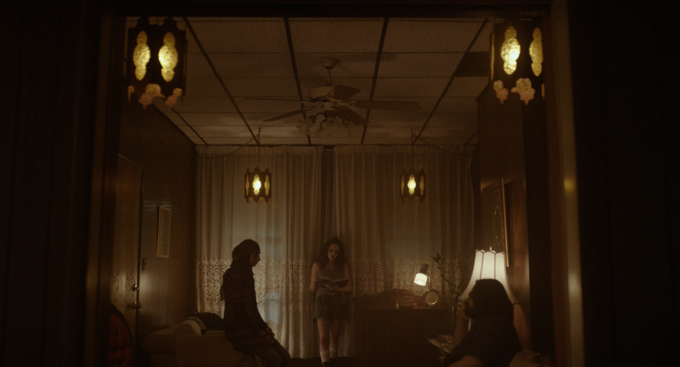
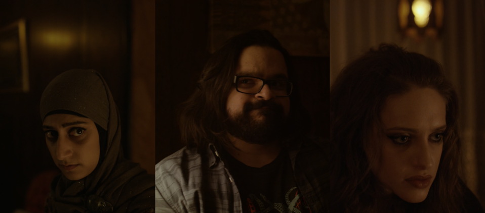
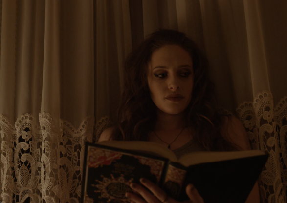
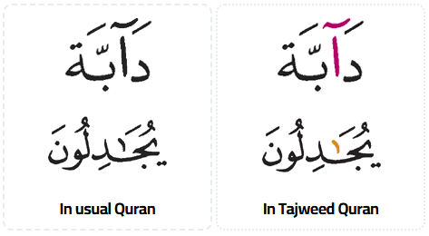

29 Aug 2026
I was watching Mr Robot, season 2, episode "2.1 Kernel Panic".
At minute 28:05, is the scene at Trenton's place.

Trenton, Darlene and Mobley are having a discussion. Earlier in the episode, one of their member, Romero, is found dead. So this triggers emergency meeting between them, to try to understand about what is going on, and what they should do.

Take a look at what Darlene is holding...

I was shocked!
I have the very same kind of Quran in my possession.
This edition of Quran (called The Tajweed Quran) is one the most popular publication by Dr Subhi Taha, of Dar Al Maarifah from Syria. You can read more about them here.
For those who are unfamiliar about Islam, please do not be confused. There is only 1 version of The Quran. This edition are made to have color indication to assist readers in recitation.

Hope that helps.
Mohamad Shahrim
author of The Laksamana